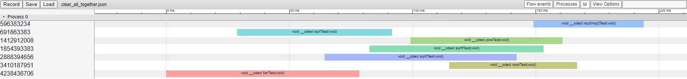

Investigating the Fast Inverse Square Root
December 27, 2022
This is going to be a pretty long journey, documenting my entire process of learning how to profile various implementations of the inverse square root in C++. I'll include a table of contents, so if you want the TL;DR, you can skip to the end. But for those of you interested in a long roller-coaster ride through assembly code, intrinsics, floating-point representations, and errors, buckle your seat belts and let's get started!
Table of Contents
The Motivations
As someone interested in game programming, I became obsessed with Quake's Fast Inverse Square Root a few years ago. Why didn't everyone use it if it was so fast? But a quick search on Stack Exchange told me that modern CPUs could compute inverse square roots much faster than Quake's algorithm. Ever since then, I've been curious to find out what exactly these methods are, how to implement them, and how to show that these methods really are faster.
As it turns out, there are several implementations of the inverse square root. Here is a list of the ones I could find (let me know in the comments if you know any others for me to benchmark):
- Using
1/sqrt(x)withsqrt(x)from thecmathinclude header - Using
sqrtf(x)orsqrtl(x)instead ofsqrt(x)above - Quake's Fast Inverse Square Root
- Using
pow(x,-0.5) - Using RSQRTSS or RSQRTPS (implemented in inline assembler)
- Using
_mm_rsqrt_ssintrinsic fromimmintrin.h
My desktop computer runs on an Intel Core i5-3450 CPU. To make things interesting, my final product was two .exe files that can be run on other Intel CPUs (booting Windows) so that in future posts, I might be able to do comparisons across different CPUs. For now, I don't know much about CPUs, so I can't say whether the above idea is actually a good one, but it'll be an interesting experiment. I'd love to hear ideas in the comments!
Implementations of the Above Methods
Quake's Fast Inverse Square Root Algorithm
The implementation of the Fast Inverse Square Root from Quake was a bit modified from the original, but still kept the important parts:
float fastInvSqrt(float x)
{ // brackets lining up nicely ;)
float xhalf = 0.5f * x;
i = 0x5f3759df - (i >> 1);
x = *(float*)&i;
x = x * (1.5f - (xhalf*x*x));
return x;
}
Nothing much to say here, other than that this algorithm is awesome.
Implementing RSQRTSS: A Story of Problems and Solutions
Implementing RSQRTSS was fairly difficult for me, considering I had not really worked with assembly code or intrnisics. In the end, I had three implementations:
inline float rsqrt(float f)
{
__asm pxor xmm1, xmm1
__asm rsqrtss xmm1, f
__asm movss f, xmm1
return f;
}
inline float rsqrt_imp2(float f)
{
return _mm_cvtss_f32(_mm_rsqrt_ss(_mm_set_ss(f)));
}
inline float rsqrt_imp3(float f)
{
__asm pxor xmm1, xmm1
__asm rsqrtps xmm1, f
__asm movss f, xmm1
return f;
}
Looking back right now, I'm not sure why I used xmm1, I believe xmm0 would have worked just as well.
I encountered several issues when working with assembly, mainly stemming from the fact that assembly language is so specific to the exact system being used. Overall though, I think I've begun to get the hang of it. Alas, the results of this project might show that all of this assembly struggle is useless in the face of intrinsics.
One other thing to note is that I was forced to use the x86 architecture only since I recieved complaints when using x64 that __asm did not exist. I am unsure if this means inline assembly is only possible in x86 or if I am simply unaware of the proper way to use assembly. In the future, I'm also interested in how to use .s assembly files which I spent a while trying to use but ultimately failed. Part of the reason is that I use Visual C++ with Visual Studio, and I'm unsure exactly how to link the .s file to the rest of the code. In particular, I consistently get a linker error when declaring an extern method rsqrt and then placing the assembler code in rsqrt.s. I initially thought the issue might be something platform-related, but the fixes I found online and tried did not work. I also considered attempting to compile the assembly code myself into a .obj file and somehow figuring out how to link that, but in the end I decided to skip the extra work and simply do everything inline (since I managed to get that to work). In the future, I will definitely try to investigate assembler code much more deeply, and maybe even do some more profiling on the different methods of writing assembler code (although I imagine it wouldn't make a difference)! Also, if anyone has any suggestions or ideas for the above issues, I'd love advice!
Implementing Benchmarking Tests
This is going to be a long length of code, so heads up! Each method of computing the reciprocal square root was run in a method as well as a lambda expression to calculate the reciprocal square roots of all integers from 1 to MAX where MAX was defined to be 16777217. This MAX value was actually discovered empirically, as I forgot about floating-point representation and only came to realize later that incrementing i by one in a for loop where i is a float cannot be done past the point where the precision of a float is worse than 1.
// TESTS
void fisrTest()
{
CHERNO_PROFILE_FUNCTION();
float res = 0;
for (float i = 0; i < MAX; i += 1)
res = fastInvSqrt(i);
//std::cout << res;
}
void sqrtTest()
{
CHERNO_PROFILE_FUNCTION();
float res = 0;
for (float i = 0; i < MAX; i += 1)
res = 1/sqrt(i);
//std::cout << res;
}
void sqrtfTest()
{
CHERNO_PROFILE_FUNCTION();
float res = 0;
for (float i = 0; i < MAX; i += 1)
res = 1 / sqrtf(i);
//std::cout << res;
}
void sqrtlTest()
{
CHERNO_PROFILE_FUNCTION();
float res = 0;
for (float i = 0; i < MAX; i += 1)
res = 1 / sqrtl(i);
//std::cout << res;
}
void powTest()
{
CHERNO_PROFILE_FUNCTION();
float res = 0;
for (float i = 0; i < MAX; i += 1)
res = pow(i, -0.5);
//std::cout << res;
}
void rsqrtTest()
{
CHERNO_PROFILE_FUNCTION();
float res = 0;
for (float i = 0; i < MAX; i += 1)
res = rsqrt(i);
//std::cout << res;
}
void rsqrtimp2Test()
{
CHERNO_PROFILE_FUNCTION();
float res = 0;
for (float i = 0; i < MAX; i += 1)
res = rsqrt_imp2(i);
//std::cout << res;
}
auto invsqrtTest = [](auto func)
{
CHERNO_PROFILE_FUNCTION();
float res = 0;
for (float i = 0; i < MAX; i += 1)
res = func(i);
//std::cout << res;
};
int main()
{
//unsigned int numThreads = std::thread::hardware_concurrency();
//std::cout << numThreads << '\n';
//std::cout << fastInvSqrt(4) << '\n';
//std::cout << "Running Tests!\n";
Instrumentor::Get().BeginSession("FISR_Profile", "results.json");
std::thread fisrt([]() { fisrTest(); });
std::thread sqrtt([]() { sqrtTest(); });
std::thread sqrtlt([]() { sqrtlTest(); });
std::thread sqrtft([]() { sqrtfTest(); });
std::thread powt([]() { powTest(); });
std::thread rsqrtt([]() { rsqrtTest(); });
std::thread rsqrtimp2t([]() { rsqrtimp2Test(); });
/*
std::thread fisrt2([]() { invsqrtTest(fastInvSqrt); });
std::thread sqrtt2([]() { invsqrtTest([](float x) { return 1 / sqrt(x); }); });
std::thread sqrtft2([]() { invsqrtTest([](float x) { return 1 / sqrtf(x); }); });
std::thread sqrtlt2([]() { invsqrtTest([](float x) { return 1 / sqrtl(x); }); });
std::thread powt2([]() { invsqrtTest([](float x) { return pow(x, -0.5); }); });
std::thread rsqrtt2([]() { invsqrtTest(rsqrt); });
std::thread rsqrtimp2t2([]() { invsqrtTest(rsqrt_imp2); });
*/
fisrt.join();
//fisrt2.join();
sqrtt.join();
//sqrtt2.join();
sqrtlt.join();
//sqrtlt2.join();
sqrtft.join();
//sqrtft2.join();
powt.join();
//powt2.join();
rsqrtt.join();
//rsqrtt2.join();
rsqrtimp2t.join();
//rsqrtimp2t2.join();
Instrumentor::Get().EndSession();
return 0;
}
You may notice the CHERNO_PROFILE_FUNCTION() preprocessor directive throughout the above code as well as a class known as Instrumentor. To learn how to benchmark and profile code, I mainly used the videos of my favorite C++ guru, TheCherno. He's an excellent YouTuber who makes amazing videos on Game Programming, many of which I've watched and enjoyed. His original Instrumentor.h file (which I used for the profiling) can be found this page on GitHub. The preprocessor directives which I defined at the top of Instrumentor.h based on his videos are:
#define CHERNO_PROFILING 1
#if CHERNO_PROFILING
#define CHERNO_PROFILE_SCOPE(name) InstrumentationTimer timer##__LINE__(name)
#define CHERNO_PROFILE_FUNCTION() CHERNO_PROFILE_SCOPE(__FUNCSIG__)
#else
#define CHERNO_PROFILE_SCOPE(name)
#endif
I still have a lot more to learn about benchmarking and profiling, and I haven't yet even finished TheCherno's videos on the subject. As a result, I may update these methods and redo this project in the future. For now though, I wanted to try everything out for fun!
Results
TheCherno's Instrumentor class creates .json files which can be read by chrome://tracing, an application that allows you to visualize benchmarking! All result files are available at this directory listing! If I ever remove directory listing from this website, let me know so that I can repost the results elsewhere! Please note that opt-disabled stands for Visual Studio's Optimization Disabled flag being enabled. The files in these folders can be dragged onto chrome://tracing for a visual on performance! In particular, here are the results compiled with C++ 17 with the Maximum Optimization (Favor Speed) (/O2) flag enabled in Visual Studio:
and similarly for C++ 20:
In both cases, the implementation with intrinsics (rsqrt_imp2) was the fastest.
Interestingly, powTest performs well in the optimized case, but when not optimized, powTest is much slower than any of the other methods. A similar thing occurs with all of the methods; rsqrt performs best without optimization, but with optimization, the intrinsics method wins out. In any case, though, the results with the Optimization flag enabled are what really matter, considering that I cannot see why someone would ever release code that wasn't fully optimized. I might be wrong though, so let me know if I should consider more deeply the results with the Optimization flag turned off!
How much better is RSQRTSS compared to the Fast Inverse Square Root? According to another person's benchmarking, it should be around 30% faster. In my results with C++ 17, rsqrtimp2Test took roughly 47.110 ms and fisrTest took roughly 75.945 ms. This is roughly 40% less time! With C++ 20, rsqrtimp2Test took roughly 44.738 ms and fisrTest took roughly 78.425 ms, which is again roughly a 40% increase in speed! Since my CPU was a Core i5-3450 and the person who made the above post used a Core i5-2500K, the difference in results can likely be attributed to the processor. See this link for a comparison of the two CPUs. Some of the difference can also be attributed to randomness in the results.
Overall, it was a pretty interesting project, and it's left a ton of questions for me to explore in upcoming blog posts. The resulting .json files for each individual method are provided at the link (somewhere) above. In the end, the intrinsic _mm_rsqrt_ss method turned out to be the fastest implementation of the reciprocal square root, even though the fast inverse square root does not perform badly at all compared to using sqrt. Of course, this is all at the cost of accuracy! The accuracy of each of these methods is something I definitely want to consider in a future post as well. Perhaps a plot of the accuracy versus speed for each of these methods would be quite interesting. In any case, that's it for now, and I look forward to future investigations! Let me know your thoughts in the comments!
Useful Links
Below, I compiled some links I found particularly interesting throughout this project.
- One of the posts which inspired me to do this project
- Another benchmark
- Pretty much where I learned to use
_mm_sqrt_ss; I'll have to look more into intrinsics again in the future - A cool website with a lot of assembler instructions
- Stack Exhange on whether or not Quake's Fast Inverse Square Root is still useful
- Wikipedia page I referred to for assembler code
- A very good reference for RSQRTSS
- A resource for learning Intrinsic Functions
- A very cool paper
- A website and information I might consider more deeply in future posts on this topic
- Wikipedia page on ulps; I'll consider when I make that accuracy post eventually (I never heard about ulps in my numerical analysis course but it seems to be useful lingo)